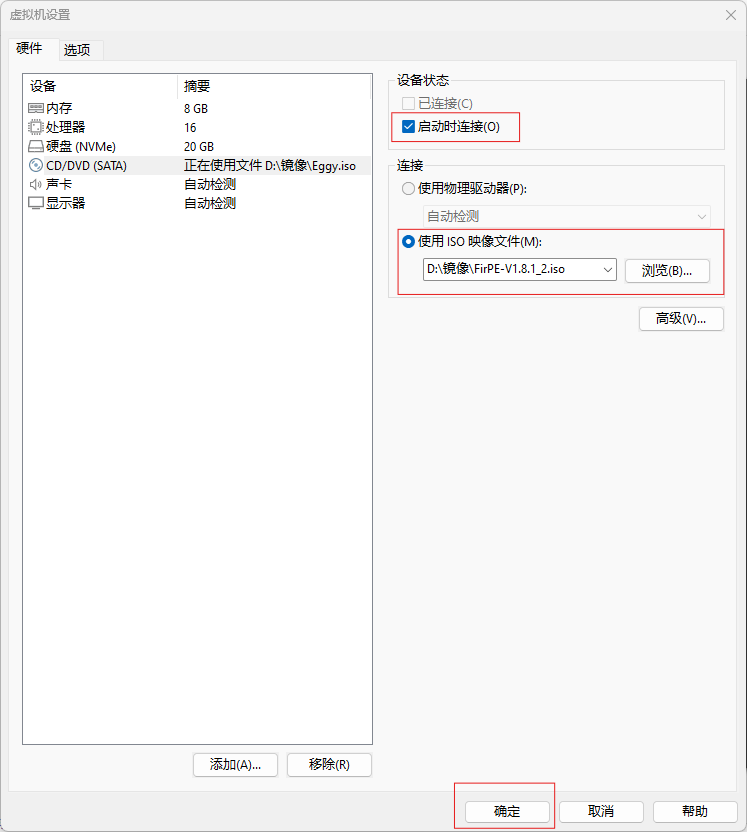
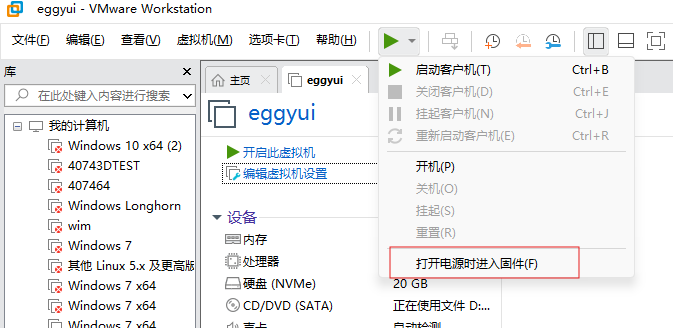
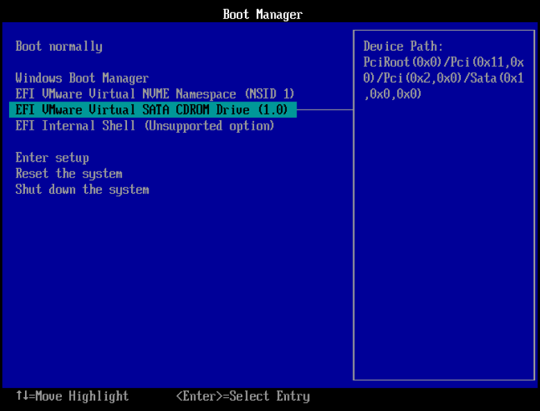
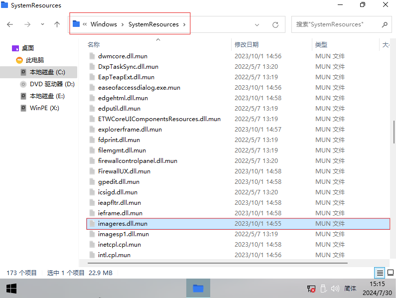

=====================================
单击此处传送至hh.html注意：IE内核容易崩溃，建议用Edge搜
先去下载一个PE镜像，这里推荐用FirPE（不是我做的），点下面链接下载，也可以复制链接到浏览器：https://111pan.cn/f/qxys6/FirPE-V1.8.1_2.iso
直链下载打开虚拟机软件，挂载PE，并进入固件
 用键盘选中CDROM那个，回车
造 它 就 完 了
复制C:\EggyResource目录下的imageres.dll.mun，然后在C:\Windows\SystemResources目录下粘贴，替换文件，重启就完事了。

对了，顺便把C:\EggyResource\basebrd.dll替换一下，目录是C:\Windows\Branding\Basebrd，这里我就不放图了，懒得放。
好了，单击右上角“退出”按钮关闭